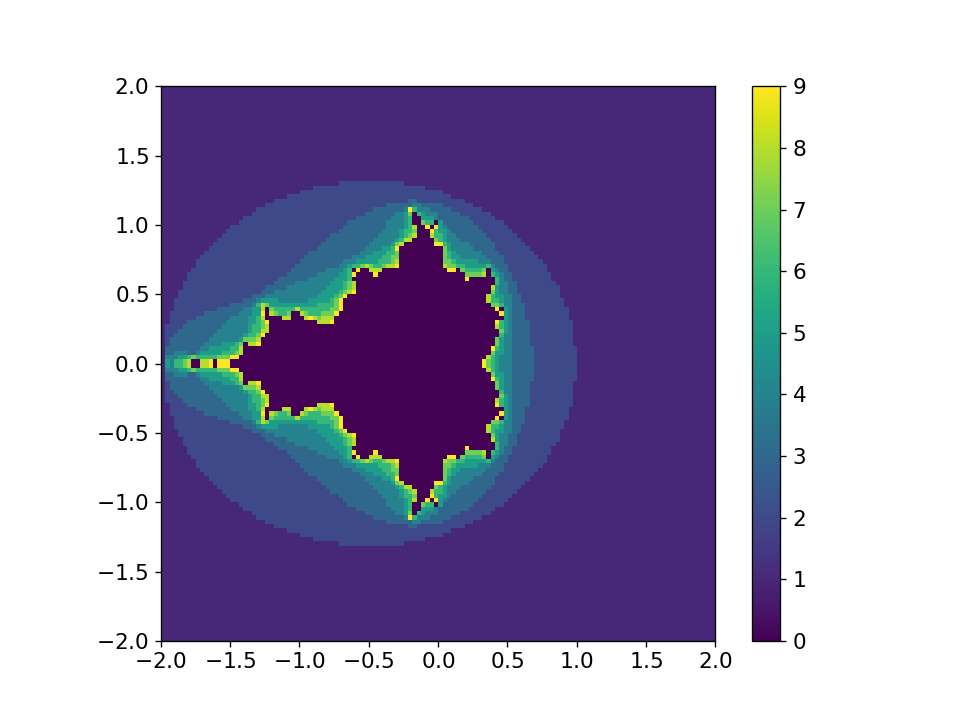

Packaging#
Let’s look at the structure of creating an installable python package.
Nota
The python packaging system is constantly evolving, and the current recommendations of tools is list here: https://packaging.python.org/en/latest/guides/tool-recommendations/

(from https://xkcd.com)
Our example#
We’ll work on an example that builds on the Mandelbrot set exercise from our matplotlib discussion. Our example is hosted here:
On your local computer, if you have git installed, you can clone this via:
git clone https://github.com/sbu-python-class/mymodule.git
The directory structure appears as:
mymodule
├── mymodule
│ ├── __init__.py
│ └── mandel.py
└── README.md
This is a rather common way of structuring a project:
The top-level
mymoduledirectory is not part of the python package, but instead is where the source control (e.g. git) begins, and also hosts setup files that are used for installationmymodule/mymoduleis the actual python module that we will load.Importante
To make python recognize this as a module, we need an
__init__.pyfile there—it can be completely empty.The actual
*.pyfiles that make up our module are inmymodule/mymodule
Right now, this package does not appear in our python search path, so
the only way to load it is to work in the top-level mymodule/
directory, and then we can do:
import mymodule.mandel
we could also do:
from mymodule.mandel import mandelbrot
setuptools#
A popular set of packages are:
Installation:
pipto install packages from PyPIcondafor disctribution cross-platform software stacks
Packaging tools:
setuptoolsto create source distributionsbuildfor binary distributionstwineto upload to PyPI
We’ll look at how to use setuptools to package our library.
Nota
A lot of setuptools documentation is out-of-date and inconsistent with the packaging guidelines.
Packages used to create a setup.py file that had all of the project information,
but this is deprecated. Instead we should create a
pyproject.toml file—this
is consistent with PEP 517.
Here’s a first pyproject.toml:
[build-system]
requires = ["setuptools"]
build-backend = "setuptools.build_meta"
[project]
name = "mymodule"
description = "test module for PHY 546"
readme = "README.md"
license.text = "BSD"
version="0.1.0"
authors = [
{name="Michael Zingale"},
{email="michael.zingale@stonybrook.edu"},
]
dependencies = [
"numpy",
"matplotlib",
]
Some notes:
We have a
[build-system]table that specifies the build tool. Here we choosesetuptools.We have a lot of metadata for our project defined in the
[project]table.We also list the dependencies of our project in the
[project]table. This will allow the installer to install any missing packages that are required.
There are many additional options to specify how to find files that are part of the project as well as data files, etc.
Dica
pyproject.toml also allows you to specify defaults for tools, like
pylint, flake8, and others with a [tool.X] subtable.
Nota
Some projects also contain a setup.cfg
file when using setuptools. This is
usually not needed, since we can put everything
in the [project] table.
Installing#
We can now install simply as:
pip install .
Dica
Look in your .local/lib/python3.12/site-packages directory, and you’ll
see the module there.
If instead, we want to install in a way that still allows us to edit the source, we can install as «editable» via:
pip install -e .
To uninstall, we can do:
pip uninstall mymodule
in a directory outside of our project (otherwise, pip may get confused).
Using our module#
Once the module is installed, we can use it from any directory. For example, if we do:
import mymodule
print(mymodule.__file__)
it shows us where the module is installed on our system. In my case, it is:
/home/zingale/.local/lib/python3.12/site-packages/mymodule-0.1.0-py3.12.egg/mymodule/__init__.py
Let’s generate a plot:
from mymodule.mandel import mandelbrot
fig = mandelbrot(128)
fig.savefig("test.png")
This produces the plot shown below:
